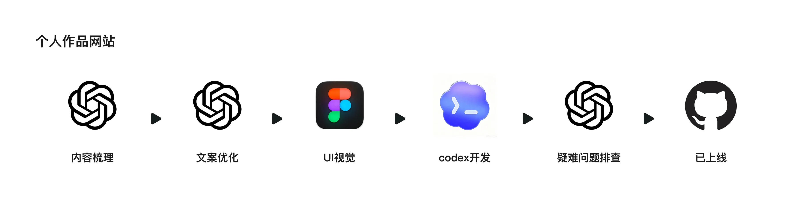
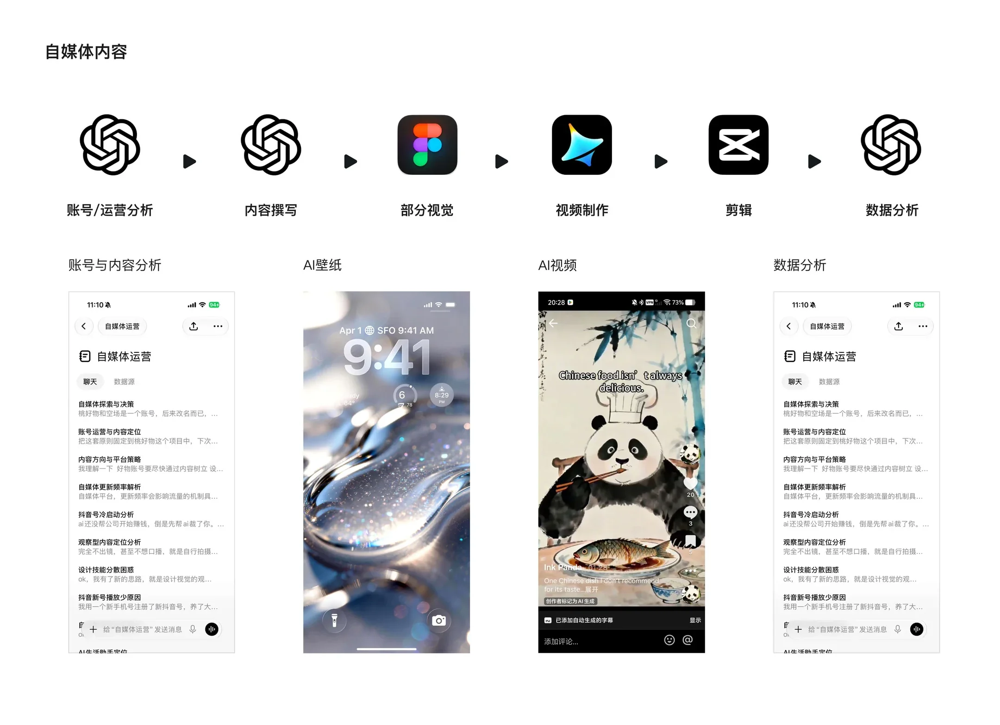

项目概览
时间与类型
时间周期：2025–2026
项目类型：AI辅助开发
个人作品集网站搭建
我的角色
产品视觉设计师
Vibe Coding 实践者
项目背景
希望以低成本、可持续更新的方式搭建个人作品集网站，并探索从 Figma 设计稿到前端页面落地的 AI 流程。

时间周期：2025–2026
项目类型：AI辅助开发
个人作品集网站搭建
产品视觉设计师
Vibe Coding 实践者
希望以低成本、可持续更新的方式搭建个人作品集网站，并探索从 Figma 设计稿到前端页面落地的 AI 流程。
在 Figma 中完成网站整体视觉、像素风格、项目结构和页面导航规划，明确首页、项目详情页与 More Works 的信息层级。
通过 Codex 将设计稿转化为可访问网页，并持续根据预览效果调整宽度、间距、响应式规则、导航交互和多端适配问题。

完成个人作品集网站的线上搭建与持续迭代，验证了从设计稿到网页落地的 Vibe Coding 工作流。
这次探索让我更理解前端实现逻辑，也提升了我将设计需求转化为开发指令、排查还原问题和推动方案落地的能力。
时间周期：2025–2026
项目类型：AI内容制作
通过使用 ChatGPT 和即梦等 AI 工具，提升自媒体内容的制作效率，同时学习相关运营知识。使用 AI 工具贯穿整体项目，在文案 / 平面 / 视频等不同节点发挥 AI 的赋能效应。
